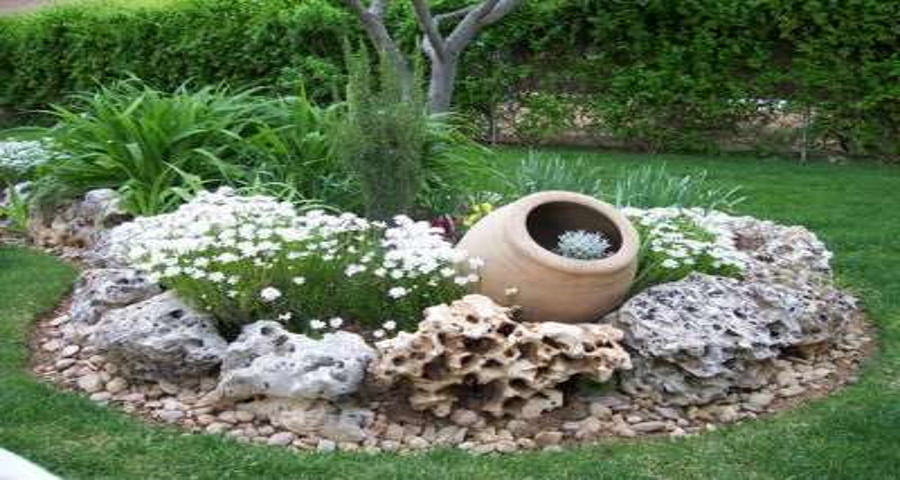

Eco Tree





Diseñamos el paisaje de patios y jardines pequeños, potenciando al máximo los espacios, sus alturas, aportando una nueva mirada a los aspectos de estos particulares lugares. Diseñamos caminos en piedra, lajas, madera; combinando materiales y alturas en jardines y parques de variadas magnitudes.
Mas..El riego por aspersión o también llamado riego automático, es una técnica muy productiva sobre todo para el riego de espacios verdes muy amplios y huertas extensas. Es importante tener en cuenta algunos consejos para que la tecnología que se aplica a este riego sea provechosa y no se convierta en un inconveniente.
Mas..
Con la llegada del buen tiempo los que disponen de jardín o patio trasero pasan mucho más tiempo en él como es normal. Disfrutando del aire, dándose un agradable baño, cenando con la familia, durmiendo la siesta. Al momento de decorar un parque se deben tener en cuenta muchos aspectos.
Mas..